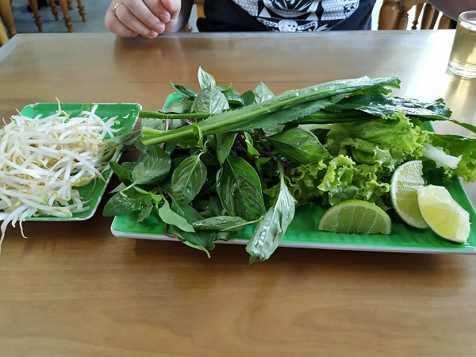
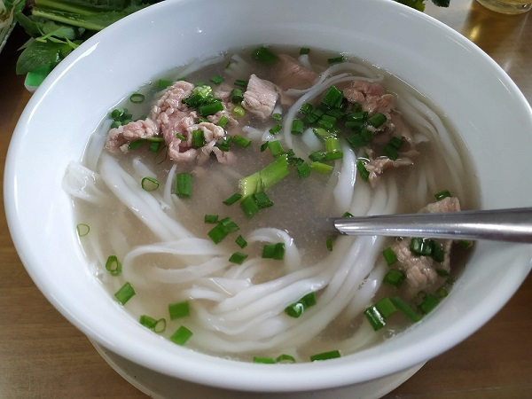
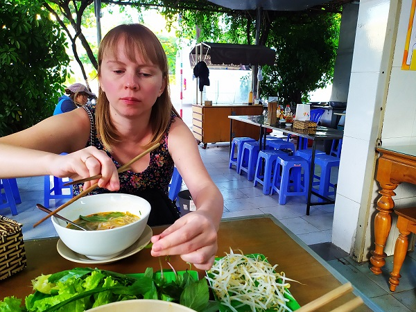
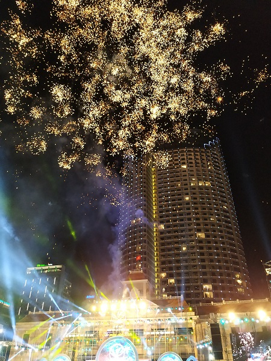
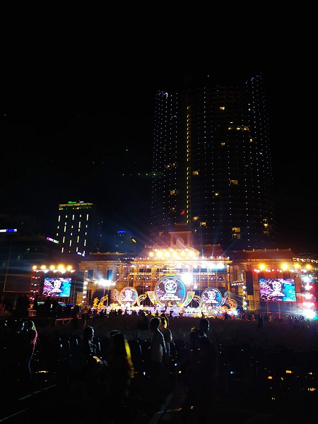

We didn't do anything interesting today exept of eating in a non touristic caffe where they cook only one meal - soup. All other time we just walking and having a rest at a beach. Waves on the sea got bigger and bigger, only a few peole were brave enough to swim.
While walking we noticed a local caffe some days ago, as I understood there served only one kind of Vietnamese soup. All tables in that caffe always were occupied by locals. So we decided to have a dinner in that place.
Caffe was really simple, located at the crossroads. There were some usual wooden tables, plastic chairs and instead of two walls just open space with a view on a road. While we were waiting for our soups locals constantly arriving on their mopeds and bought take away food.
The most interesting part was the way they serve food. Greens were served separately frome the soup and we had to add it by ourselve directly in a hot bouillon. Also there were differend spicy oils and a cold drink.



At the evening we walked to a supermarket that located quite far away from a touristic area and on our way back came across a concert. I think local or may be Vietnamese celebrities were performing because local people were filming them and sang along them. There were beautiful firework at the end of the show, I thik it was better that at New Year night.


Summaries:
1 – Next time I will try to find out about local activities in advance.